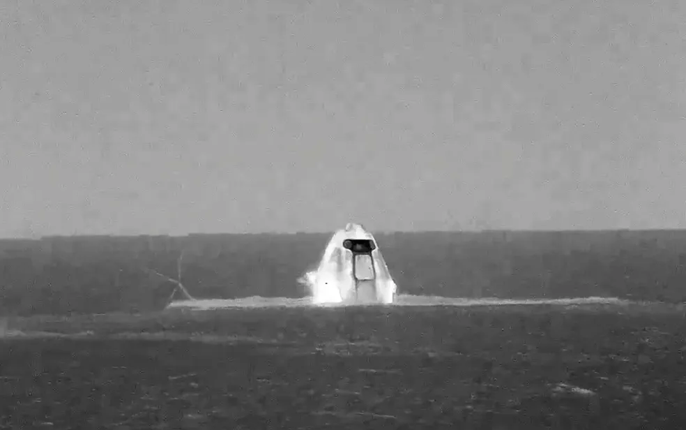

Após quase três meses no espaço, na Estação Espacial Intrenacional (ISS), três astronautas americanos e um alemão retornaram à Terra no início da madrugada desta esta sexta-feira (6) - horário no Brasil. A cápsula Dragon, da SpaceX, que está a serviço da Nasa, pousou em segurança na costa de Tampa, na Flórida. A equipe conduziu pesquisas orbitais que vão desde pimentões cultivados no espaço até robôs.
Os americanos Kayla Barron, de 34 anos, Raja Chari, 44, e Tom Marshburn, 61, e o astronauta da Agência Espacial Europeia (ESA) Matthias Maurer, 52, permaneceram quase 24 horas na nave até pousarem por volta de 1h40 - horário de Brasília.
A cápsula foi resgatada por um navio.
A tripulação foi substituída na ISS há uma semana por outros quatro astronautas: três americanos e um italiano. Mais três cosmonautas russos permanecem na estação.
 A espaçonave Dragon Endurance boiando na costa de Tampa, Flórida — Foto: Nasa TV / via AFP Photo.